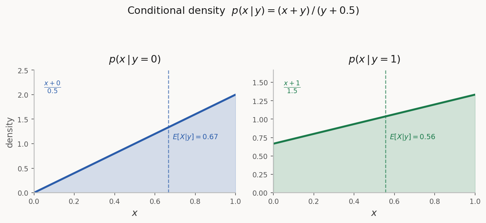
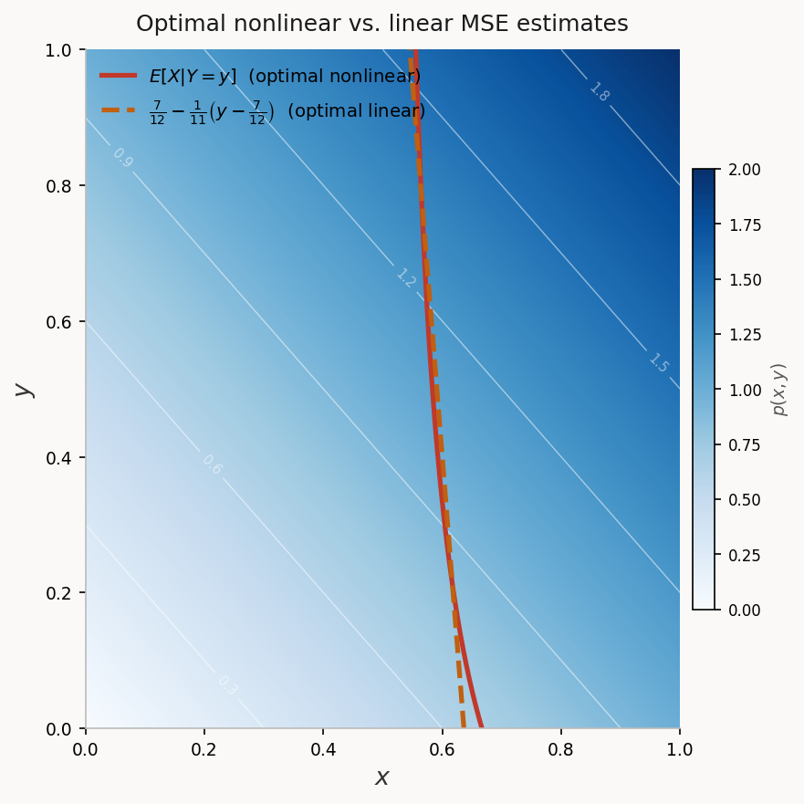

Minimum MSE Estimation
- Define the linear MSE estimate and obtain its formula for the scalar and vector settings.
- Compute conditional density functions and conditional expectations.
- Identify the conditional expectation as the minimum MSE estimate.
Section 1Introduction to MSE Estimation
Consider the following estimation setup: a hidden random variable $X \in \mathbb{R}^n$, an observation $Y \in \mathbb{R}^m$, and an estimator $\hat{X} \in \mathbb{R}^n$ which is a function of $Y$ designed to approximate $X$. In the MSE estimation framework, the estimator is obtained by minimizing:
where $\mathcal{V}_Y$ is the space of estimators we search over. In this lecture we consider two choices:
- Linear estimators: $\mathcal{V}_Y = \{KY + b \;;\; K \in \mathbb{R}^{n \times m},\; b \in \mathbb{R}^n\}$
- All estimators: $\mathcal{V}_Y = \{f(Y) \;;\; f : \mathbb{R}^m \to \mathbb{R}^n\}$
We also identify the setting where the linear estimator is optimal among all estimators.
Section 2Minimum Linear MSE Estimation
2.1Scalar Case
Assume both $X$ and $Y$ are scalar. The MSE minimization over $k, b \in \mathbb{R}$ is:
Expanding and completing the square using the rules of covariance and expectation:
This is minimized by:
The minimum MSE achieved is:
where $e = X - \hat{X}^*$.
The formula depends only on the first and second moments of $X$ and $Y$, and their covariance — not on the full joint distribution. It is the optimal linear estimate even when $X$ and $Y$ do not have a linear relationship.
The estimate has a feedback-error correction form: the prior guess $E[X]$ is corrected by gain $k^*$ times the innovation $Y - E[Y]$.
The minimum MSE $E[e^2]$ equals the prior uncertainty $\text{var}(X)$ reduced by a term proportional to the correlation between $X$ and $Y$.
When $\text{cov}(X,Y) = 0$, we have $\hat{X}^* = E[X]$ — the observation provides no information.
Let $X \sim \mathcal{N}(\mu, \sigma^2)$ and $Y = X + W$ with $W \sim \mathcal{N}(0, r^2)$ independent of $X$. Then:
This is a convex combination of the observation $Y$ and the prior mean $\mu$. When $r/\sigma \ll 1$ (low noise), $\hat{X} \approx Y$. When $r/\sigma \gg 1$ (high noise), $\hat{X} \approx \mu$. The minimum MSE is:
2.2Vector Case
For $X \in \mathbb{R}^n$ and $Y \in \mathbb{R}^m$, we minimize over $K \in \mathbb{R}^{n \times m}$ and $b \in \mathbb{R}^n$. Writing the error $e := X - KY - b$ and the MSE as:
Expanding the error covariance and completing the square in $K$:
where $K^* = \text{Cov}(X,Y)\text{Cov}(Y)^{-1}$. The square-norm of the expectation of the error is simplified as
concluding the following simplified expression for the MSE
The optimal gain and bias are:
The optimal error $e^* = X - \hat{X}^*$ satisfies $E[e^*] = 0$ and:
Let $X \sim \mathcal{N}(\mu, \Sigma)$ and $Y = HX + W$ with $W \sim \mathcal{N}(0, R)$ independent of $X$. Using $\text{Cov}(X,Y) = \Sigma H^\top$ and $\text{Cov}(Y) = H\Sigma H^\top + R$:
The matrix $K^*$ is the Kalman gain — this formula appears directly in the Kalman filter update equations. The error covariance is:
The MSE of the optimal estimate is $E[\|e\|^2] = \text{Tr}(\text{Cov}(e))$.
Let $X = [X_1, X_2]^\top \sim \mathcal{N}(0, I)$ and $Y = h_1 X_1 + h_2 X_2 + W$ with $W \sim \mathcal{N}(0, r^2)$. Then:
The uncertainty ellipse $\{x : x^\top \text{Cov}(X-\hat{X})^{-1} x = 1\}$ grows in directions where the error covariance is large. Study the effect of $[h_1, h_2]$ on the ellipse in the code demonstration.
Relate the optimal linear MSE estimate to the regularized least-squares problem.
- (a) Show that the solution to $\min_{\hat{X}} \|Y - H\hat{X}\|^2 + \lambda\|\hat{X}\|^2$ equals the optimal linear MSE estimate when $X \sim \mathcal{N}(0, \frac{1}{\lambda}I)$ and $W \sim \mathcal{N}(0,I)$. Use the identity $(I + UV)^{-1}U = U(I + VU)^{-1}$.
- (b) Show that the solution to $\min_{\hat{X}} (Y - H\hat{X})^\top R^{-1}(Y - H\hat{X}) + (\hat{X} - \mu)^\top \Sigma^{-1}(\hat{X} - \mu)$ equals the optimal linear MSE estimate when $X \sim \mathcal{N}(\mu, \Sigma)$ and $W \sim \mathcal{N}(0, R)$.
Section 3Minimum MSE Estimation
Can we achieve a lower MSE with a nonlinear estimator $\hat{X} = f(Y)$? To answer this, we first need conditional probabilities and conditional expectations.
3.1Conditional Probability
The conditional probability of event $A$ given event $B$ is denoted $P(A|B)$. Using the identity $P(A \text{ and } B) = P(B)P(A|B) = P(A)P(B|A)$, we obtain Bayes' law:
Let $A$ = patient has lung cancer, $B$ = patient smokes. Suppose $P(B|A) = 0.8$, $P(A) = 0.05$, $P(B) = 0.2$. Then:
The probability of lung cancer given smoking is 20%. (Numbers are illustrative.)
A family has two children. Each child is equally likely to be a girl or boy. You observe that one child is a girl. What is the probability that the other child is also a girl?
3.2Conditional Probability Density Functions
For random variables $X$ and $Y$ with joint density $p_{X,Y}(x,y)$, the conditional density of $X$ given $Y$ satisfies:
Interchanging $X$ and $Y$ and applying Bayes' law for densities:
For $p(x,y) = x + y$ on $[0,1]^2$ with marginal $p_Y(y) = y + \frac{1}{2}$:
The figure below shows this conditional density for four values of $y$. As $y$ increases, the distribution shifts toward larger $x$ values and becomes more uniform.

Show that if $X$ and $Y$ are independent, then $p_{X|Y}(x|y) = p_X(x)$ and $p_{Y|X}(y|x) = p_Y(y)$.
3.3Conditional Expectation
The conditional expectation of $X$ given $Y = y$ is:
More generally, $E[f(X)|Y=y] = \int f(x)\, p_{X|Y}(x|y)\,dx$. Dropping $=y$, the conditional expectation $E[X|Y]$ is a random variable — a function of $Y$.
For $p(x,y) = x+y$ on $[0,1]^2$:
- $E[X|Y]$ is a function of $Y$: there exists $\hat{f}$ such that $E[X|Y] = \hat{f}(Y)$.
- Linearity: $E[\alpha X + \beta Z|Y] = \alpha E[X|Y] + \beta E[Z|Y]$.
- $E[Xf(Y)|Y] = f(Y)E[X|Y]$ — any function of $Y$ is treated as a constant.
- $E[X|Y] = E[X]$ when $X$ and $Y$ are independent.
- Tower property: $E[E[X|Y]] = E[X]$.
- $E[E[X|Y,Z]|Y] = E[X|Y]$.
Use the definition of conditional expectation to prove rule (5): $E[E[X|Y]] = E[X]$.
Let $X \sim \mathcal{N}(0,1)$ and $Y = X + W$ with $W \sim \mathcal{N}(0,r^2)$ independent of $X$, so $p_{Y|X}(y|x) = \frac{1}{\sqrt{2\pi r^2}}e^{-(y-x)^2/(2r^2)}$.
- (a) Show that $p_{X|Y}(x|y) = \frac{1}{\sqrt{2\pi\sigma^2}}e^{-(x - \frac{y}{1+r^2})^2/(2\sigma^2)}$ where $\sigma^2 = \frac{r^2}{1+r^2}$.
- (b) Use part (a) to find $E[X|Y]$.
- (c) Compare with the optimal linear MSE estimate.
3.4Conditional Expectation as Minimum MSE Estimate
We now solve $\min_f E[(X - f(Y))^2]$ over all functions $f$. Conditioning on $Y$:
Taking expectations of both sides:
Optimal nonlinear estimate (over all functions $f$):
Optimal linear estimate (over $\hat{X} = KY + b$):
For $p(x,y) = x+y$ on $[0,1]^2$, the optimal (nonlinear) estimate is:
The optimal linear estimate is:
The two MSE values are remarkably close, with the nonlinear estimator offering only a marginal improvement — consistent with the small negative correlation between $X$ and $Y$.

Section 4Jointly Gaussian Setting
Computing the conditional expectation is generally hard. An important tractable case is when $X$ and $Y$ are jointly Gaussian, i.e., $Z = [X, Y]^\top$ has a Gaussian density. In this case, the conditional expectation is linear and coincides with the optimal linear MSE estimate.
If $X$ and $Y$ are jointly Gaussian, then:
Moreover, the conditional density $p_{X|Y}(x|y)$ is Gaussian $\mathcal{N}(KY+b,\, P)$ where:
Define $\hat{X} = KY + b$ and error $e = X - \hat{X}$. Both are Gaussian. The estimate formula implies $\text{Cov}(e, Y) = 0$, and since $e$ and $Y$ are Gaussian, they are independent. Therefore $e$ and $\hat{X}$ are independent. Since $X = \hat{X} + e$ with $e$ independent of $\hat{X}$ and $e \sim \mathcal{N}(0, P)$, conditioning on $Y$ gives $X|Y \sim \mathcal{N}(\hat{X}, P)$. $\square$
This result is fundamental: in the Gaussian setting, the linear estimator is globally optimal, and we never need to search for nonlinear improvements.
Section 5Programming Exercise: Nonlinear Estimation
Let $X(0) \sim \mathcal{N}(0, P)$ and $X(1) = X(0) + U$ where $U = \pm 1$ with equal probability, independent of $X(0)$. The observation is $Y = X(1) + W$ with $W \sim \mathcal{N}(0, R)$ independent of everything else.
- (a) Write code generating $N$ i.i.d. samples $\{(X(1)_i, Y_i)\}_{i=1}^N$. Plot a scatter plot with $P = 0.1$, $R = 0.4$.
- (b) Derive the best linear MSE estimator $\hat{f}_{\text{lin}}(Y)$ as a formula in $P$ and $R$. Overlay the estimator on the scatter plot.
- (c) Extend the search to $\mathcal{V} = \{c_0 + c_1\psi_1(Y) + \cdots + c_m\psi_m(Y)\}$. Use the optimality conditions to show the best estimator in $\mathcal{V}$ is:
$$E[X(1)] + \text{Cov}(X, \psi(Y))\,\text{Cov}(\psi(Y))^{-1}\bigl(\psi(Y) - E[\psi(Y)]\bigr)$$
- (d) With $\psi(Y) = [Y, Y^3]^\top$, approximate the estimator numerically using sample means and covariances. Call it $\hat{f}_{\text{cubic}}(Y)$ and add to the scatter plot.
- (e) Repeat with $\psi(Y) = [Y, \text{sgn}(Y)]^\top$ where $\text{sgn}(Y) = \mathbf{1}_{Y > 0}$. Call it $\hat{f}_{\text{sgn}}(Y)$ and add to the scatter plot.
- (f) Numerically compare the MSE for all three estimators. Which performs best?